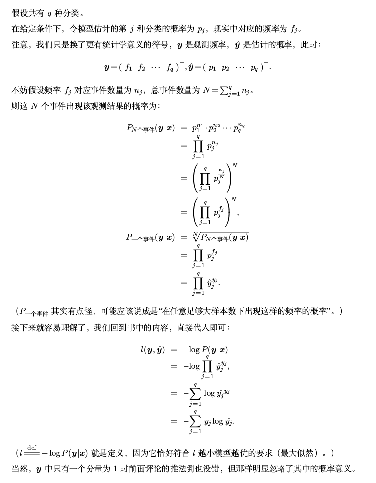

🔗Chapter 1：linear regression and multilayer perceptron
线性回归
线性回归的表示
线性回归(linear regression)基于几个简单假设：
-
自变量\(\mathbf{x}\)与因变量\(y\)之间的关系是线性的，即\(y\)可以表示为\(\mathbf{x}\)中元素的加权和:
\[
\hat{y} = \mathbf{w}^\intercal \mathbf{x} + b
\]
对于多维数据\(\mathbf{X} \in \mathbb{R}^{n \times d}\)，即n个样本，d种特征：
\[
{\hat{\mathbf{y}}} = \mathbf{X} \mathbf{w} + b
\]
-
允许观测值中存在噪声，假设任何噪声都比较正常，如噪声遵循正态分布。
损失函数
对于真实样本数据集，其中的\(\mathbf{x}\)与\(y\)之间不可能具有标准的线性关系，因此需要一个确定一个拟合程度的度量,即损失函数（loss function），来量化目标的实际值与预测值之间的差距。对于回归问题通常使用平方误差函数（MSE）作为损失函数：
\[
L(\mathbf{w}, b) =\frac{1}{n} \sum_{i=1}^n \left(\hat{y}^{(i)} - y^{(i)}\right)^2 =\frac{1}{n} \sum_{i=1}^n \left(\mathbf{w}^\intercal \mathbf{x}^{(i)} + b - y^{(i)}\right)^2
\]
即我们希望寻找到最优的权重与偏置\((\mathbf{w}^*, b^*) = \operatorname*{argmin}_{\mathbf{w}, b}\ L(\mathbf{w}, b)\)，来使得总损失最小(与真实值的差距小)。
随机梯度下降法
梯度下降法（gradient descent）在损失函数减小的方向上更新参数来降低误差：

\[
(\mathbf{w},b) \leftarrow (\mathbf{w},b) - \eta \sum_{i =1}^n \partial_{(\mathbf{w},b)} l^{(i)}(\mathbf{w},b).
\]
因为传统的梯度下降法需要遍历整个数据集，在实际的执行中可能会较慢，因此可以在每一次更新权重时随机抽取一小批样本来计算更新，这种变体为小批量随机梯度下降法(minibatch stochastic gradient descent),假设从数据集中随机抽取一个小批量\(\mathcal{B}\)：
\[
\begin{split}
\begin{aligned}
\mathbf{w} &\leftarrow \mathbf{w} - \frac{\eta}{|\mathcal{B}|} \sum_{i \in \mathcal{B}} \partial_{\mathbf{w}} l^{(i)}(\mathbf{w}, b) = \mathbf{w} - \frac{\eta}{|\mathcal{B}|} \sum_{i \in \mathcal{B}} \mathbf{x}^{(i)} \left(\mathbf{w}^\top \mathbf{x}^{(i)} + b - y^{(i)}\right), \\
b &\leftarrow b - \frac{\eta}{|\mathcal{B}|} \sum_{i \in \mathcal{B}} \partial_b l^{(i)}(\mathbf{w}, b) = b - \frac{\eta}{|\mathcal{B}|} \sum_{i \in \mathcal{B}} \left(\mathbf{w}^\top \mathbf{x}^{(i)} + b - y^{(i)}\right). \\
\end{aligned}
\end{split}
\]
其中\(|\mathcal{B}|\)为表示每个小批量中的样本数，即批量大小（batch size）
即使数据集是完美符合线性且无噪声，通过梯度下降法得到的估计值也不会使损失函数真正地达到最小值：因为算法会使得损失向最小值缓慢收敛，但却不能在有限的步数内非常精确地达到最小值。
线性回归的解析解
对于线性回归任务，我们的目标是最小化\(\|\mathbf{y} - \mathbf{X}\mathbf{w}\|^2\)，对于\({\hat{\mathbf{y}}} = \mathbf{X} \mathbf{w} + b\)：
\[
\begin{aligned}
\|\mathbf{y} - \mathbf{X}\mathbf{w}\|^2 =& (\mathbf{y} - \mathbf{X}\mathbf{w})^\intercal (\mathbf{y} - \mathbf{X}\mathbf{w}) = (\mathbf{y}^\intercal - \mathbf{w}^\intercal \mathbf{X}^\intercal) (\mathbf{y} - \mathbf{X}\mathbf{w}) \\
=& \mathbf{y}^\intercal \mathbf{y} + \mathbf{w}^\intercal \mathbf{X}^\intercal \mathbf{X}\mathbf{w} - \mathbf{y}^\intercal \mathbf{X}\mathbf{w} - \mathbf{w}^\intercal \mathbf{X}^\intercal \mathbf{y} \\
=& \mathbf{y}^\intercal \mathbf{y} + \mathbf{w}^\intercal \mathbf{X}^\intercal \mathbf{X}\mathbf{w} - 2 \mathbf{y}^\intercal \mathbf{X}\mathbf{w} \\
\end{aligned}
\]
为求极值，使\(\nabla_{\mathbf{w}} \|\mathbf{y} - \mathbf{X}\mathbf{w}\|^2 = 0\),有：
\[
\nabla_{\mathbf{w}} \|\mathbf{y} - \mathbf{X}\mathbf{w}\|^2 = 2 \mathbf{X}^\intercal \mathbf{X}\mathbf{w} - 2 \mathbf{X}^\intercal \mathbf{y}
\]
可得：
\[
\mathbf{w}^* = (\mathbf X^\intercal \mathbf X)^{-1}\mathbf X^\intercal \mathbf{y}
\]
线性回归的基础实现
为了实现一个完整的线性回归模型，我们需要生成数据、构建模型、损失函数和小批量随机梯度下降优化器，本节来实现一个最基础的线性回归模型：
| def CreatData(features, num_examples, w, b):
X = torch.normal(0, 1, size = (num_examples, features))
y = torch.matmul(w, X.T) + b + torch.normal(0, 0.1, size=(1, num_examples))
return X, y.reshape((-1,1))
|
| def LinearRegression(X, w, b):
y_hat = torch.matmul(w, X.T) + b
return y_hat.reshape(-1, 1)
def MSELossfunction(y_hat, y):
return (y - y_hat) ** 2
|
| def Dataiter_RandomBatch(batch_size, features, labels): # 迭代器
num = len(features)
numlist = [i for i in range(0, num)]
random.shuffle(numlist)
for k in range(0, num, batch_size):
RandomBatch = numlist[k:min(k + batch_size, num)]
yield features[RandomBatch], labels[RandomBatch]
def SGD(params, alpha, batch_size):
with torch.no_grad():
for param in params:
param -= alpha * param.grad / batch_size
param.grad.zero_()
|
| w_0 = torch.tensor([1, 3, 2, 4, 5, 6], dtype=torch.float)
b_0 = 5.5
num_examples = 100
features = len(w_0)
X,y = CreatData(features, num_examples, w_0, b_0)
w = torch.normal(mean = 0, std = 1, size = w_0.shape, requires_grad=True)
b = torch.zeros(1, requires_grad=True)
num_epochs = 50
alpha = 0.01
batch_size = 10
for epoch in range(num_epochs):
for X_batch, y_batch in Dataiter_RandomBatch(batch_size, X, y):
loss = MSELossfunction(y_batch, LinearRegression(X_batch, w, b))
loss.sum().backward()
SGD([w, b], alpha, batch_size)
with torch.no_grad():
train_loss = MSELossfunction(LinearRegression(X, w, b), y)
print(f'epoch {epoch + 1}, loss {float(train_loss.mean()):f}')
print(f'w的估计误差: {w_0 - w}')
print(f'b的估计误差: {b_0 - b}')
|
对于loss.sum().backward()的理解
出处： https://zhuanlan.zhihu.com/p/427853673
| for epoch in range(num_epochs):
for X, y in data_iter(batch_size, features, labels):
l = loss(net(X, w, b), y) # `X`和`y`的小批量损失
# 因为`l`形状是(`batch_size`, 1)，而不是一个标量。`l`中的所有元素被加到一起，
# 并以此计算关于[`w`, `b`]的梯度
--------------------------------------------------------------
l.sum().backward()
--------------------------------------------------------------
sgd([w, b], lr, batch_size) # 使用参数的梯度更新参数
with torch.no_grad():
train_l = loss(net(features, w, b), labels)
print(f'epoch {epoch + 1}, loss {float(train_l.mean()):f}')
|
如果Tensor 是一个标量(即它包含一个元素的数据)，则不需要为 backward() 指定任何参数，但是如果它有更多的元素，则需要指定一个 gradient 参数，该参数是形状匹配的张量。本代码中l为矩阵，需要l.sum()转化为标量后再.backward()。
线性回归的简洁实现
| dataset = data.TensorDataset(features, labels)
dataLoader = data.DataLoader(dataset, batch_size, shuffle=True)
net = nn.Sequential(nn.Linear(2, 1))
net[0].weight.data.normal_(0, 0.01)
net[0].bias.data.fill_(0)
loss = nn.MSELoss()
trainer = torch.optim.SGD(net.parameters(), lr=0.03)
|
| num_epochs = 3
for epoch in range(num_epochs):
for X, y in dataLoader:
l = loss(net(X) ,y)
trainer.zero_grad() #清除上一次的梯度值
l.backward() #损失函数进行反向传播 求参数的梯度
trainer.step() #步进 根据指定的优化算法进行参数更新
l = loss(net(features), labels)
print(f'epoch {epoch + 1}, loss {l:f}')
w = net[0].weight.data
print('w的估计误差：', true_w - w.reshape(true_w.shape))
b = net[0].bias.data
print('b的估计误差：', true_b - b)
|
如果我们用nn.MSELoss(reduction=‘sum’)替换nn.MSELoss()代码的行为相同，需要怎么更改学习速率？
需要将学习率lr除以batch_size(默认参数是'mean')
原因：若损失函数采用'sum' ，等效于损失函数相对于'mean'放大，将会使得计算所得的梯度增大,这时候原有的学习率显得过大，无法高效逼近最优点。
如果我们将权重初始化为零，会发生什么。算法仍然有效吗？
参考文章：谈谈神经网络权重为什么不能初始化为0
在单层网络中(一层线性回归层)，可以把权重初始化为0，但是当网络加深后，在全连接的情况下，在反向传播的时候，由于权重的对称性会导致出现隐藏神经元的对称性，使得多个隐藏神经元的作用就如同1个神经元，算法还是有效的，但是效果不大好。
Softmax回归
在分类问题当中，我们需要得到每个类别的概率（因此有多个输出）,我们希望模型的输出\(\hat{y}_j\)可以视为属于类\(j\)的概率，然后选择具有最大输出值的类别\(\operatorname*{argmax} y_j\)作为我们的预测。
例如，如果\(\hat{y}_1\)、\(\hat{y}_2\)和\(\hat{y}_3\)分别为0.1、0.8和0.1， 那么我们预测的类别就是第2类。因此，我们要将多个输出数字的总和限制为1，并且每个输出永远大于0，
softmax函数能够将未规范化的预测变换为非负数并且总和为1，同时让模型保持可导的性质(规范化)。
\[
\hat{\mathbf{y}} = \mathrm{softmax}(\mathbf{o})\quad \text{其中} \quad 0 \leq \hat{y}_j = \frac{\exp(o_j)}{\sum_k \exp(o_k)} \leq 1
\]
在小批量样本处理中，其中特征维度（输入数量）为d，批量大小为n，输出为q，假设小批量样本的特征为\(\mathbf{X} \in \mathbb{R}^{n \times d}\)，权重矩阵为\(\mathbf{W} \in \mathbb{R}^{d \times q}\)，偏置为\(\mathbf{b} \in \mathbb{R}^{1\times q}\)，则softmax回归可表示为：
\[
\begin{split}
\begin{aligned}
\mathbf{O} &= \mathbf{X} \mathbf{W} + \mathbf{b}, \\
\hat{\mathbf{Y}} & = \mathrm{softmax}(\mathbf{O}).
\end{aligned}
\end{split}
\]
由上述易知，\(\hat{\mathbf{y}}\)可理解为对给定任意输入
\(\mathbf{x}\)的属于每个类的条件概率。对于softmax回归，我们可以使用\(\|\boldsymbol{\hat y}^{(i)}-\boldsymbol{y}^{(i)}\|^2/2\)，但实际上并不需要预测概率与标签概率完全相同,只需要对应的\(\hat{\mathbf{y}}^{(i)}\)比其他类别大即可。
对于数据集\(\{\mathbf{X}, \mathbf{Y}\}\)具有n个样本，有：
\[
P(\mathbf{Y} \mid \mathbf{X}) = \prod_{i=1}^n P(\mathbf{y}^{(i)} \mid \mathbf{x}^{(i)}).
\]
要最大化\(P(\mathbf{Y} \mid \mathbf{X})\),向上式做负对数化:
\[
-\log P(\mathbf{Y} \mid \mathbf{X}) = \sum_{i=1}^n -\log P(\mathbf{y}^{(i)} \mid \mathbf{x}^{(i)})
= \sum_{i=1}^n H (\mathbf{y}^{(i)}, \hat{\mathbf{y}}^{(i)})
\]
其中：
\[
H (\mathbf{y}^{(i)}, \hat{\mathbf{y}}^{(i)}) = -\sum_{j=1}^q y_j^{(i)} \log \hat y_j^{(i)}
\]
上式这个损失函数被称为交叉熵损失（cross-entropy loss）,因为向量\(\boldsymbol y^{(i)}\)只有其中的某一个元素为1，其余均为0,即交叉熵只关心对正确类别的预测概率，因为只要其值足够大，就可以确保分类结果正确
假设训练数据集的样本数为 n，交叉熵损失函数定义为:
\[
\ell(\boldsymbol{\Theta}) = \frac{1}{n} \sum_{i=1}^n H (\mathbf{y}^{(i)}, \hat{\mathbf{y}}^{(i)})
\]
根据softmax的定义，可知其导数：
\[
\partial_{o_j} l(\mathbf{y}, \hat{\mathbf{y}}) = \frac{\exp(o_j)}{\sum_{k=1}^q \exp(o_k)} - y_j = \mathrm{softmax}(\mathbf{o})_j - y_j.
\]
该导数即是softmax模型分配的概率与实际发生的情况之间的差异，这使梯度计算在实践中变得容易很多。
Advice
对上式\(H (\mathbf{y}^{(i)}, \hat{\mathbf{y}}^{(i)}) = -\sum_{j=1}^q y_j^{(i)} \log \hat y_j^{(i)}\)的解答：

基于数学定义的softmax函数可能导致什么问题？提示：尝试计算exp(50)的大小。
可能会导致数据溢出的情况。可以使用LogSoftmax代替，即在Softmax的基础上再做一次log。(nn.LogSoftmax())
\[
LogSoftmax(x_i) = log(\frac{exp(x_i)}{\sum_j exp(x_j)})
\]
LogSoftmax相对于Softmax的优势
-
对数运算时求导更容易，加快了反向传播的速度。
-
解决Softmax可能存在的上溢和下溢的问题。
pytorch中的nn.CrossEntropyLoss()
先说负对数似然函数NLLLoss()，本质上就是一种交叉熵函数：
| predict = torch.Tensor([[4, 5, 1],
[5, 5, 9]])
label = torch.tensor([1, 2])
nn.nllloss(predict, label, reduction='mean')
# output: tensor(-7)
|
即在使用NLLLoss前要先使用LogSoftmax
| predict = torch.Tensor([[2, 3, 1],
[3, 7, 9]])
predict = torch.log(torch.softmax(predict, dim=-1))
# predict: tensor([[-1.4076, -0.4076, -2.4076],
[-6.1291, -2.1291, -0.1291]])
label = torch.tensor([1, 2])
nllloss(predict, label)
# output: tensor(0.2684)
|
nn.CrossEntropyLoss()损失函数
\[
CrossEntropyLoss() = NLLLoss(LogSoftmax())
\]
| cross_loss = nn.CrossEntropyLoss()
predict = torch.Tensor([[2, 3, 1],
[3, 7, 9]])
label = torch.tensor([1, 2])
cross_loss(predict, label)
# output: tensor(0.2684)
|
Softmax的简洁实现
- 使用pytorch内置的Fashion-MNIST分类数据集
| mnist_train = torchvision.datasets.FashionMNIST(
root="../data", train=True, transform=transforms.ToTensor(), download=True)
mnist_test = torchvision.datasets.FashionMNIST(
root="../data", train=False, transform=transforms.ToTensor(), download=True)
# Fashion-MNIST由10个类别的图像组成,每个类别由训练数据集中的6000张图像和测试数据集中的1000张图像组成.
batch_size = 256
train_iter = data.DataLoader(mnist_train, batch_size, shuffle=True, num_workers=0)
test_iter = data.DataLoader(mnist_test, batch_size, shuffle=True, num_workers=0)
|
- 设置网络，并且使用.apply()技巧对多层网络进行参数初始化
| def init_weights(module): #权重初始化。apply()
if isinstance(module,nn.Linear):
nn.init.normal_(module.weight, std=0.01, mean=0)
nn.init.constant_(module.bias, 0)
net = nn.Sequential(nn.Flatten(),
nn.Linear(784, 10))
net.apply(init_weights)
|
| loss = nn.CrossEntropyLoss(reduction='mean')
trainer = torch.optim.SGD(net.parameters(), lr=0.1)
|
| def evaluate_accuracy(net, iter):
cmp = 0
tot = 0
net.eval() # 将模型设置为评估模式
with torch.no_grad():
for X, y in iter:
y_hat = net(X)
y_hat = y_hat.argmax(axis=1) # 在行中比较，选出最大的列索引
CountMatrix = y_hat == y
cmp += sum(CountMatrix)
tot += len(CountMatrix)
return cmp / tot
num_epochs = 10
for epoch in range(num_epochs):
for X_train , y_train in train_iter:
l =loss(net(X_train), y_train)
trainer.zero_grad()
l.backward()
trainer.step()
print(f'epoch{epoch}-accuracy:{evaluate_accuracy(net, train_iter) * 100:.3f}%')
|
多层感知机
多层感知机（multilayer perceptron）通过在网络中加入一个或多个隐藏层来克服线性模型的限制，使其能处理更普遍的函数关系类型
权重衰减
在训练参数化机器学习模型时， 权重衰减（weight decay）是最广泛使用的正则化的技术之一， 它通常也被称为\(L_2\)正则化。将\(L_2\)范数作为惩罚项加到最小化损失的问题中,原来的训练目标最小化训练标签上的预测损失为最小化预测损失和惩罚项之和。如果权重向量增长过大，算法可能会更集中于最小化权重范数\(\| \mathbf{w} \|^2\)
。
\[
L(\mathbf{w}, b) + \frac{\lambda}{2} \|\mathbf{w}\|^2,
\]
| trainer = torch.optim.SGD([
{"params":net[0].weight,'weight_decay': Lambda}, # 通过'weight_decay'设置权重的L2范数作为惩罚项
{"params":net[0].bias}], lr=0.01)
|
暂退法dropout
在标准暂退法正则化中，通过按保留（未丢弃）的节点的分数进行规范化来消除每一层的偏差。 换言之，每个中间活性值h以暂退概率p由随机变量替换h'，如下所示：
\[
\begin{split}
\begin{aligned}
h' =
\begin{cases}
0 & \text{ 概率为 } p \\
\frac{h}{1-p} & \text{ 其他情况}
\end{cases}
\end{aligned}
\end{split}
\]
| def dropout_layer(X, dropout):
assert 0 <= dropout <= 1
if dropout == 1:# 在本情况中，所有元素都被丢弃
return torch.zeros_like(X)
if dropout == 0:# 在本情况中，所有元素都被保留
return X
mask = (torch.rand(X.shape) > dropout).float()
return mask * X / (1.0 - dropout)
|
| net = nn.Sequential(nn.Flatten(),
nn.Linear(784, 256),
nn.ReLU(),
# 在第一个全连接层之后添加一个dropout层
nn.Dropout(dropout1),
nn.Linear(256, 256),
nn.ReLU(),
# 在第二个全连接层之后添加一个dropout层
nn.Dropout(dropout2),
nn.Linear(256, 10))
def init_weights(m):
if type(m) == nn.Linear:
nn.init.normal_(m.weight, std=0.01)
net.apply(init_weights);
|
总结：
如果更改第一层和第二层的暂退法概率,会发生什么情况?
第一层暂退法概率大,第二层暂退法概率小,则效果会较好。
可能原因:
-
前面层抽取的是比较底层的信息,有较多的无用信息冗余通过强神经元,从而使得网络记住这些冗余信息而学不到关键信息(导致过拟合),用较大Dropout较好,后面层主管高层抽象语义信息,较为关键,是把握识别整体的关键部分,用较小Dropout较好;
-
一般前面层全连接数目比较大,抽取信息量比较多,自然带来冗余信息较多,那么多的数目连接,可以通过较大Dropout丢弃掉大部分的全连接
因此dropout能够减小网络对某些强神经元的依赖性，使得强弱神经元方差减小
Xavier初始化
Xavier初始化是一种在训练深度学习模型时常用的权重初始化方法。它是 Xavier Glorot 和 Yoshua Bengio 在 2010 年提出的，原文为 Understanding the difficulty of training deep feedforward neural networks。该初始化方法旨在保持激活函数的方差在前向传播和反向传播过程中大致相同，从而避免梯度消失或梯度爆炸的问题。如果方差过大，那么网络的层将会更难以学习；如果方差过小，那么该层的权重将会难以更新。
(xavier初始化只适用于关于0对称、呈线性的激活函数，比如 sigmoid、tanh)
梯度消失和爆炸
在深度网络中，梯度消失和梯度爆炸是一个常见的问题。如果每一层都将方差放大，那么在多层网络中，梯度可能会很快增长至非常大的值（爆炸），或者减小至接近零（消失）。
Xavier 初始化试图使得每一层的输出的方差接近于其输入的方差，从而避免梯度消失或梯度爆炸的问题，每一层的参数更新的幅度就不会相差太大，从而加速收敛。
torch.nn.init.xavier_uniform_ 函数从均匀分布中抽取权重，其中:
\[
U\left(-\sqrt{\frac{6}{n_\mathrm{in} + n_\mathrm{out}}}, \sqrt{\frac{6}{n_\mathrm{in} + n_\mathrm{out}}}\right)
\]
torch.nn.init.xavier_normal_ 函数从正态分布中抽取权重，其中:
\[
\sigma^2 = \frac{2}{n_\mathrm{in} + n_\mathrm{out}}
\]